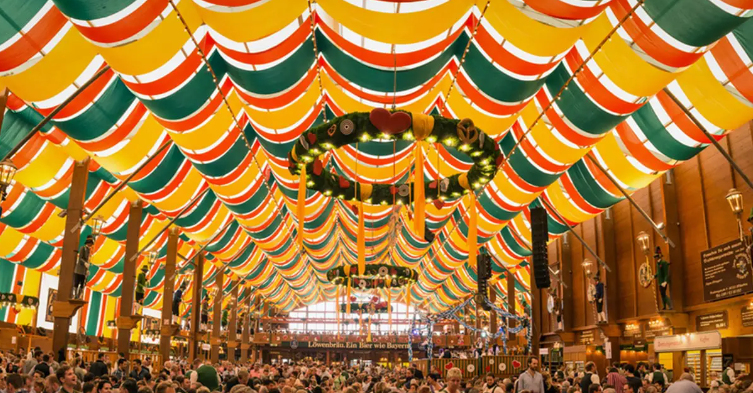

ოკტობერფესტი არის ყოველწლიური ფესტივალი, რომელიც იმართება მიუნხენში, გერმანიაში. ეს არის მსოფლიოში ყველაზე დიდი ლუდის ფესტივალი, სადაც ყოველწლიურად მილიონობით ადამიანი მოდის. აქ შეგიძლიათ დატკბეთ კარგი მუსიკით, გემრიელი საჭმლით და, რა თქმა უნდა, ლუდით.
ოკტობერფესტი პირველად გაიმართა 1810 წელს, რათა აღნიშნულიყო ქორწილი პრინც ლუდვიგისა და პრინცესა ტერეზას. ხალხი ძალიან მოიხიბლა რადგან ეს ფესტივალი ყოველწლიურად დაიწყეს.
ფესტივალი იწყება სექტემბრის შუა რიცხვებში და გრძელდება დაახლოებით 16-18 დღის განმავლობაში, ჩვეულებრივ, ოქტომბრის პირველ კვირაში მთავრდება. ეს არის დრო, როდესაც ხალხი იკრიბება და ერთად აღნიშნავს.
ოკტობერფესტზე შეგიძლიათ მხოლოდ მიუნხენის ქარხნებში დამზადებული ლუდის დალევა. ეს ნიშნავს, რომ მხოლოდ ადგილობრივი ლუდი არის ხელმისაწვდომი, რაც განსაკუთრებულად ხაზს უსვამს ბავარიული ტრადიციების მნიშვნელობას.
ფესტივალზე ბევრი გემრიელი საჭმელია, როგორიცაა პრეცელები, სოსისები და შემწვარი ქათამი. ეს კერძები ძალიან პოპულარულია და კარგად ეხამება ლუდს
ყოველწლიურად ოკტობერფესტი დაახლოებით 6 მილიონ ადამიანს იზიდავს. ეს ფესტივალი დიდი მნიშვნელობა აქვს ადგილობრივი ეკონომიკისთვის, რადგან ტურისტები იხვეწენ ქალაქში და სტუმრობენ რესტორნებს და სასტუმროებს.
ფესტივალზე შეგიძლიათ მოისმინოთ ტრადიციული მუსიკა და მონაწილეობა მიიღოთ ცეკვებში. ასევე, ხშირად ტარდება სხვადასხვა სახის სახალისო ღონისძიებები, რაც ატმოსფეროს კიდევ უფრო მხიარულს ხდის
ოკტობერფესტზე არამხოლოდ მოზრდილებს, არამედ ბავშვებსაც აქვთ მრავალი გასართობი საშუალება. ბავშვებისთვის მოწყობილია სხვადასხვა გასართობი ატრაქციონები, როგორიცაა კარუსელები, სათამაშო მოედნები და თამაშები. ეს საშუალებას აძლევს ოჯახებს ერთად ატარონ დრო და ისიამოვნონ ფესტივალის ატმოსფეროთი.
ოკტობერფესტზე მყოფი ადამიანები ყოველთვის მხიარულ განწყობაზე არიან. ხალხმრავალი იყო, ხმაური და მუსიკა აუწერს შეხვედრას, რაც ქმნის განსაკუთრებულ, დღესასწაულურ ატმოსფეროს. ხალხი ერთობლივად ცეკვავს, sings და იმართება თამაშები. ბევრი სტუმარი ტრადიციულ ბავარიულ სამოსშია ჩაცმული, რაც ფესტივალს უფრო საინტერესო და სევდიან ხდის.
ოკტობერფესტი არის არა მხოლოდ ლუდის ფესტივალი, არამედ ძალიან საინტერესო კულტურული ღონისძიება. აქ თქვენ შეგიძლიათ გატაროთ სახალისო დრო მეგობრებთან ერთად, მოსწონოთ კარგი მუსიკა და ისიამოვნოთ ადგილობრივი კერძებით. ეს არის დრო, როდესაც ხალხი ერთმანეთთან არის და სიხარულით აღნიშნავს ცხოვრების სიხარულს.
